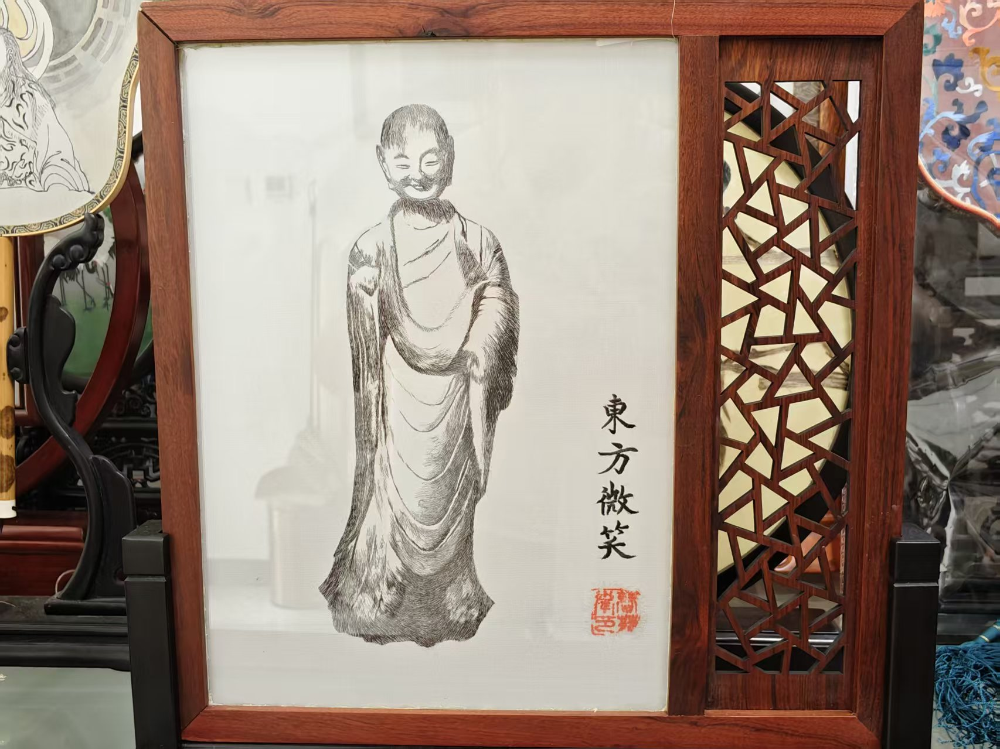
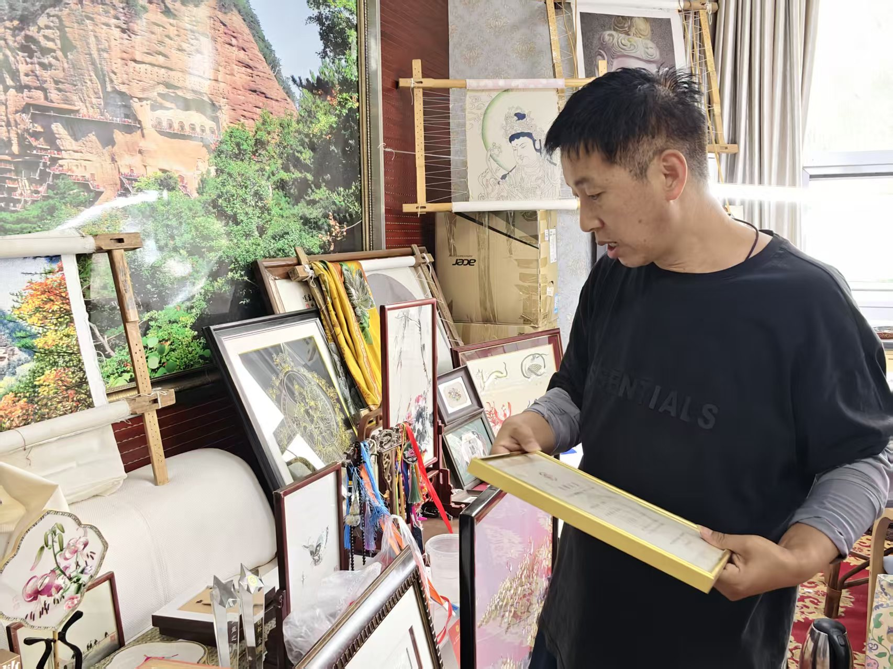
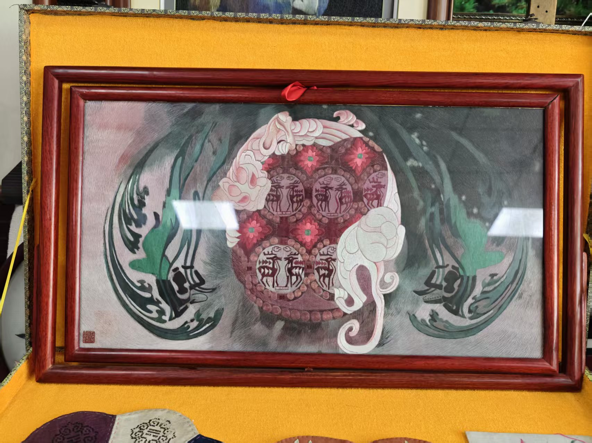
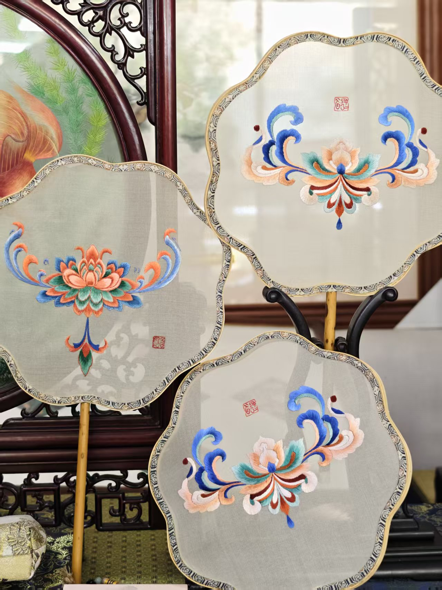
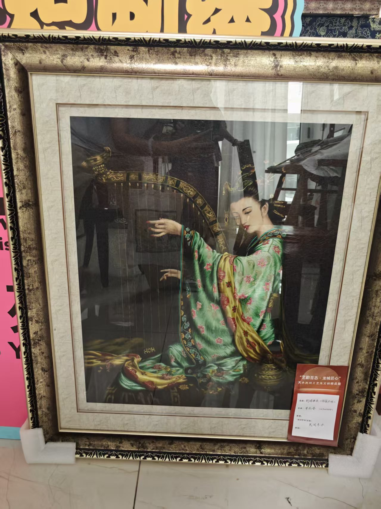
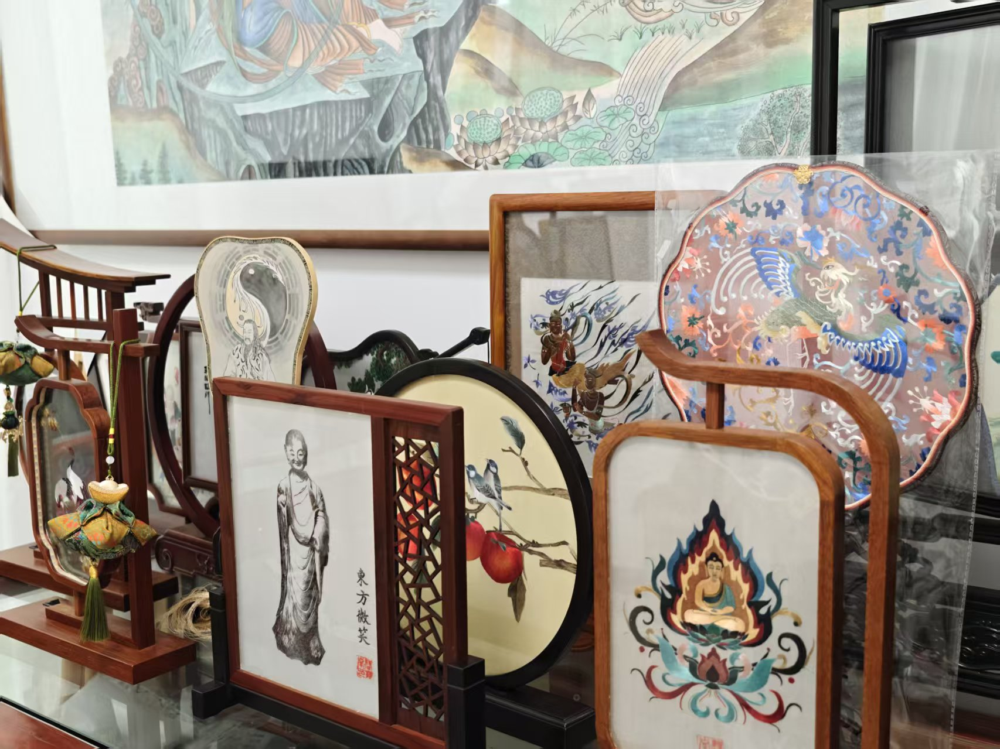
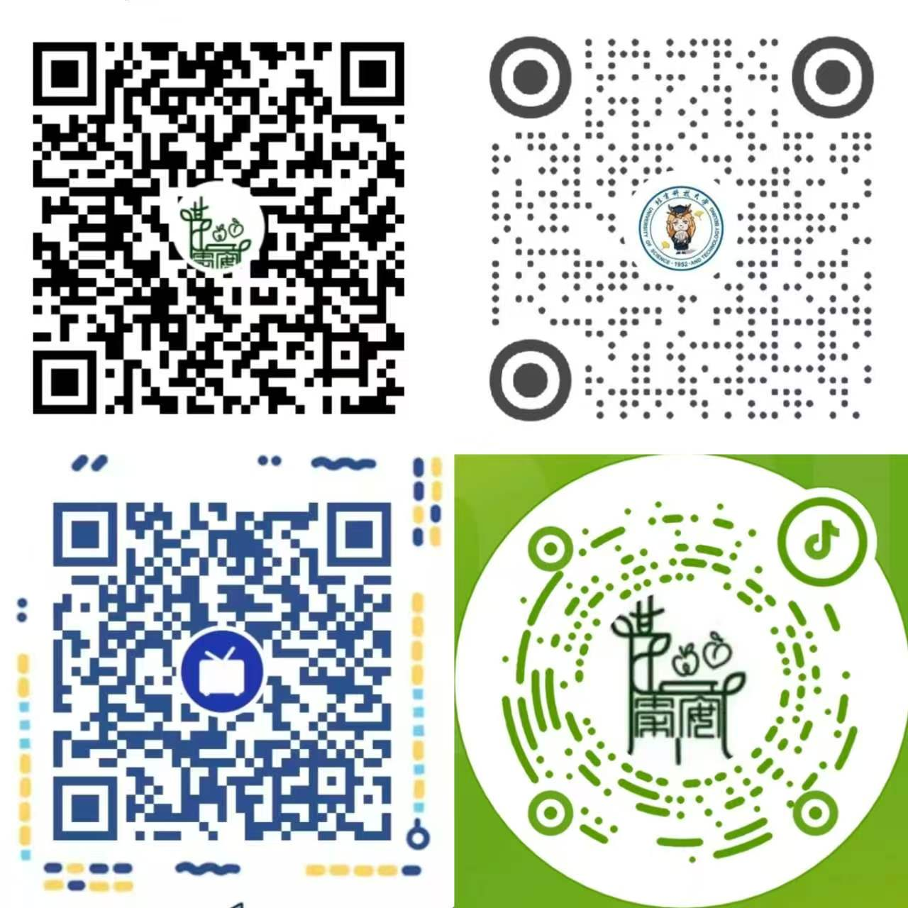

黄土高原上的指尖传奇

陇绣，又称庆阳刺绣，是甘肃省庆阳市最具代表性的传统美术类非物质文化遗产。 它深深扎根于黄土高原的农耕文明，融合了周秦文化的古朴厚重与丝路文化的多元交融， 历经千年沉淀，形成了独具一格的刺绣艺术体系。
陇绣之美，在于其浓烈而不失和谐的色彩、饱满而不失灵动的构图、丰富而不失章法的针技。 每一幅作品都是陇原儿女对自然的礼赞、对生活的热爱、对美好的祈愿。
一针一线见天地
大红、深绿、明黄为主调
对比鲜明而不失和谐
尽显黄土高原的豪放热情
齐针、套针、打籽、锁绣
等数十种针法交替运用
层次分明，纹理生动
鱼戏莲、凤穿牡丹、麒麟送子
传统图案寄寓着
农耕民族的美好祝愿
从香包、肚兜到挂件、屏风
融入日常生活的陇绣
在时代演进中延续生命力
十类绣法 · 各显神通 · 匠心入微
陇绣技法博大精深，涵盖铺绣、箔绣、堆绣、雕绣、裰绣、贴绣、挑花、盘金、钉线等十类绣法。 其中破线绣、合线绣、包绣、拼贴浮雕绣、打籽绣等典型技法最具代表性。
将丝线剖解为原始单线进行刺绣，线条细若游丝，适合表现细腻的花鸟翎毛与人物面部，是陇绣中最考验功力的技法之一。
将绣线在针上绕圈后刺入布面，形成粒状小结，绣面密布均匀颗粒，富有立体感与触感，常用于花蕊、果实等图案。
集剪贴、垫衬、刺绣于一体，以多层布料叠加缝制，打造浮雕般的高低起伏，造型饱满灵动，尤以虎头、金瓜等立体造型著称。
以纸片或布片为模，用针线包裹形成独特层次，边缘清晰利落，适合表现几何纹样与建筑图案，是陇绣构图的常用技法。
将多股丝线合成一股进行绣制，线迹厚重饱满，质感醇厚，表现出黄土高原特有的粗犷与豪放之美，常用于大幅作品。
齐针为平绣之基，线条整齐均匀；抢针分层递进、色彩渐次过渡。二者交替运用，层次分明，是陇绣最核心的基础针法。
以针为笔 · 以线为墨 · 绣出陇原万象
方寸之间见乾坤 · 点击放大欣赏





黄土高原的五颗文化明珠 · 陇绣为其一
国家级非物质文化遗产，以丝线绣制、内填香草，端午佩戴驱瘟避疫，庆阳被誉为"中国香包刺绣之乡"。
甘肃刺绣的简称，由陇东（庆阳）、陇右（天水、陇南）、陇中（定西、兰州）、甘南临夏及河西刺绣共同构成。其中庆阳刺绣以香包实用品刺绣见长，针法古朴率真、色彩浓烈奔放，承袭周秦古韵。
以刀代笔、以纸为媒，庆阳剪纸粗犷豪放、古朴稚拙，被誉为"农耕文明的活化石"，入选人类非物质文化遗产。
国家级非遗，环县道情皮影以牛皮雕刻、借灯显影，唱腔苍凉悠远，是中国皮影戏的重要流派之一。
甘肃省非遗，曲调高亢嘹亮、质朴深情，《绣金匾》《军民大生产》等经典曲目传唱全国。
庆阳被中国民俗学会命名为"香包刺绣之乡""民间剪纸之乡""皮影之乡""窑洞民居之乡""荷花舞之乡"等十余项称号， 被文化部命名为"全国文化产业示范基地"。
北京科技大学 · 社会实践团
北京科技大学
"鹿鸣秦川，绣韵千年
让非遗在新时代绽放光彩"
我们是北京科技大学鹿望秦川实践团。怀揣着对中华优秀传统文化的敬意与热忱， 我们跨越千里，深入甘肃庆阳——陇绣的发源地。在这片厚重的黄土地上， 我们走访传承人、记录针法技艺、拍摄影像资料，用青年的视角重新审视这一古老的艺术形式。
陇绣不应该只是博物馆里的展品，它应该是活着的文化。我们希望通过这个网站， 让更多人看见陇绣的美、了解陇绣的故事、加入到保护与传承的队伍中来。
扫描下方二维码，关注鹿望秦川实践团官方账号，获取更多陇绣非遗资讯与活动动态

文化是一个国家、一个民族的灵魂。让非物质文化遗产绽放更加迷人的光彩
文化兴则国运兴，文化强则民族强。